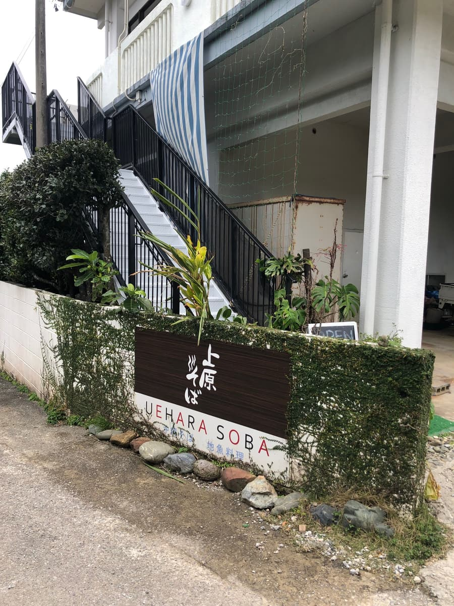
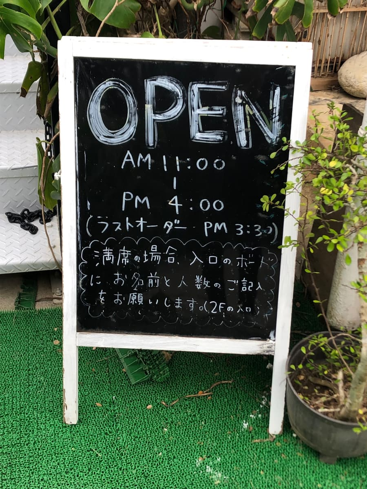
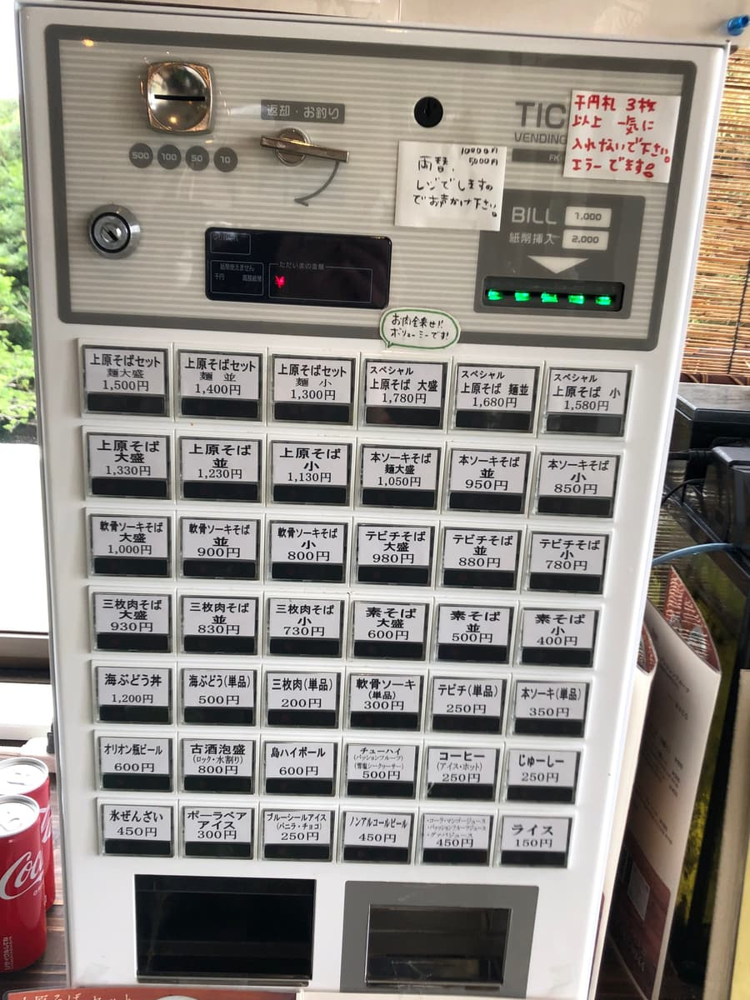
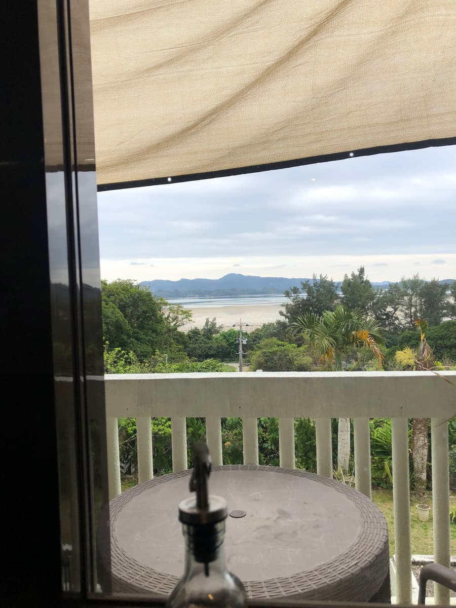
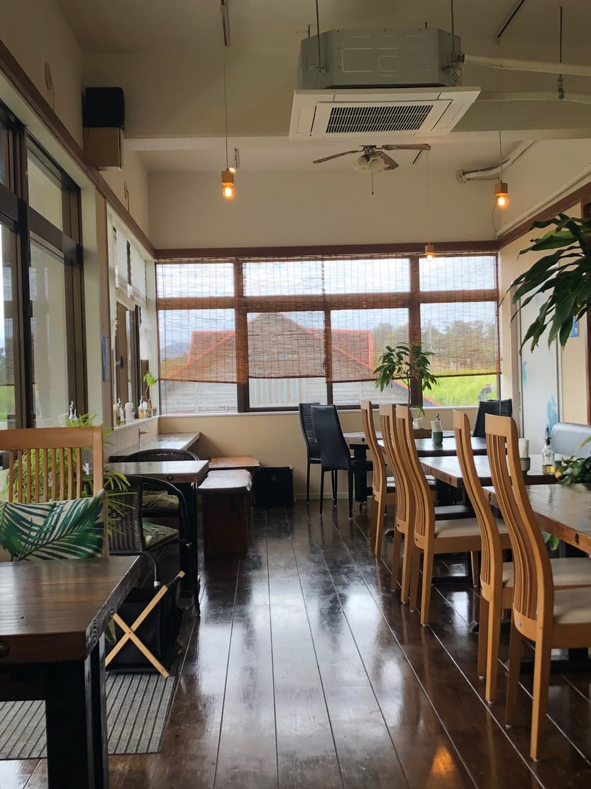
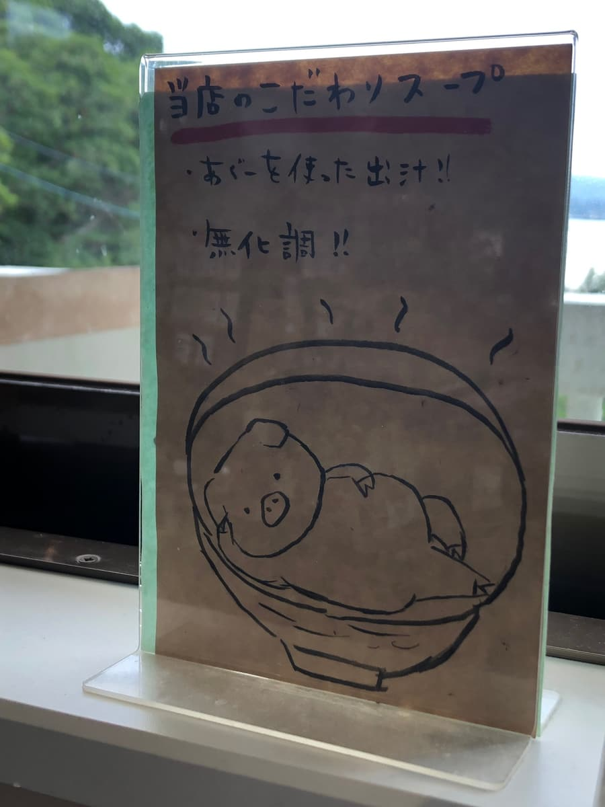
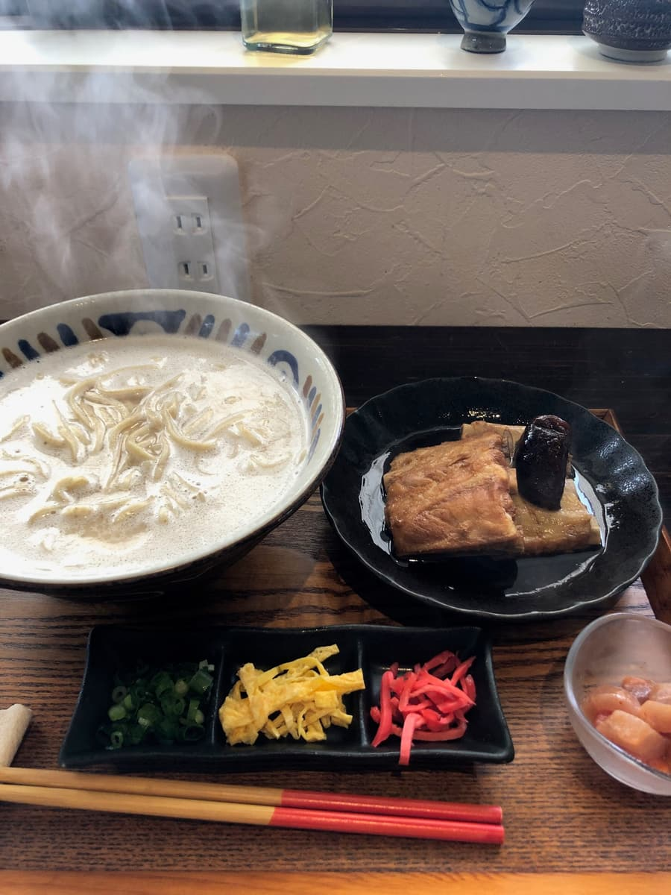
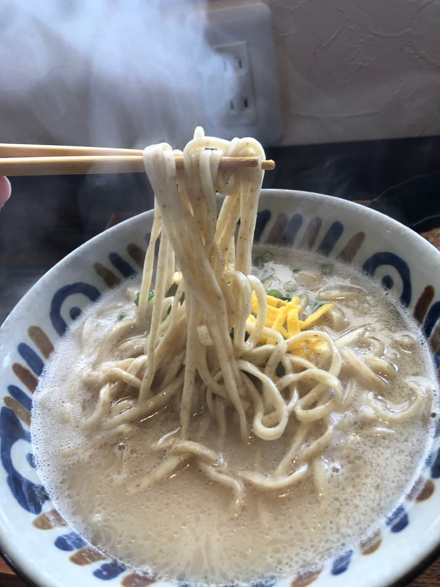

✨2025年2月吃的。这次是从一个小插曲开始的😅 我兴奋地前往屋我地岛的「苏巴苏巴」，没想到竟然公休…。因为在冲绳当地的电视节目「乌奇兰」介绍过，期待值很高，老实说打击很大。不过冲绳面巡礼就是连这种发展都很有趣，我转换心情，开始找附近营业中的店。结果遇到的就是位于名护市饶平名的「冲绳面与当地鲜鱼料理 上原面」。


建筑物的外观像是公寓，一瞬间会有点不安：是这里没错吗？不过还是有「UEHARA SOBA」的招牌好好地迎接你。入口的告示牌上写着营业时间，散发着家庭般的气氛。

是售票机形式，菜单也很丰富。除了带骨排骨面、猪脚面、三层肉面这些经典款，还有海葡萄丼的菜单。
走进店内，首先映入眼帘的是窗外的景色。因为位在高地，能一览大海的位置太棒了🌊 这天虽然有点阴天，但景色依然十分舒服。木桌和沉稳的灯光，是像咖啡厅一样时髦的空间。与其说是冲绳面店，更像是看得到海的餐厅。


这次点的是「带骨排骨面」。据说汤头可以选浓厚或清爽，问了店员，说「浓厚的比较多人点」。我就乖乖听推荐选了浓厚😄 端上来的碗，白浊的汤头令人印象深刻。听说用了阿古猪高汤，随着蒸气飘起轻柔温和的香气。


先喝一口汤。滑顺又绵密，平衡绝妙😋 和龟面的阿古猪高汤又是不同的类型，让我想起那霸市的月桃，以及宇流麻市的月黑木的味道。好喝😋

面是自家制，揉入全麦粉与柴鱼粉的中细直面。这个也很棒。很有嚼劲。和白浊汤头很搭，汤很容易沾附在面上。对我个人来说是相当喜欢的面。
另盘附上的带骨排骨，光看外观就份量十足。用筷子夹起来有一点筋感，不过也因此能享受到扎实的肉感。调味偏甜，入味很足，普通好吃😋 泡进汤里吃又是不同的表情。还有让我更开心的是小碟的生鱼片。是其他店不太看到的形式，感受得到他们很用心在当地鲜鱼料理上。面店会附生鱼片，相当少见呢。
评分（13.5分/15分）：原本是临时进来的救援投手般的店，结果却是大满贯。地点、汤头、面、配料，每一项水准都很高，老实说可以很有自信地说是「推荐店等级😄」。不管是观光客还是当地人，都很希望大家来一次的一家店。水准很高。喜欢阿古猪高汤系冲绳面的人，请务必试试看。
面：★★★★✬（4.5）
汤头：★★★★✬（4.5）
配料：★★★★✬（4.5）